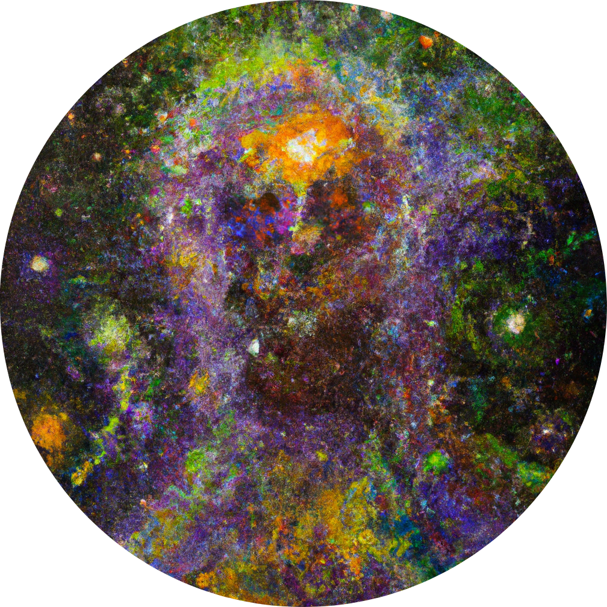

Random Walks

Hi!
I’m Yudhister. This is my site.
Here we take random walks in thinkspace, and sometimes succeed.
Selected writings:
Posts
- Hyperreals in a Nutshell
- five ways to say “Almost Always” and actually mean it
- The Hidden Perils of Hydrogen
Rambles
Books
For a full list of my writings, in order, see the archives.